| T. G. Masaryk |
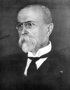 |
1918-1935 |
Založil Československo, zasazoval se o lidská práva a demokracii |
| Edvard Beneš |
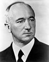 |
1935-1938, 1945-1948 |
Zasazoval se o evropskou integraci, prosazoval mezinárodní spolupráci |
| Emil Hácha |
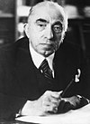 |
1938-1939 |
Založil Československo, zasazoval se o lidská práva a demokracii |
| Klement Gottwald |
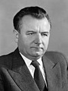 |
1948-1953 |
Byl prezidentem Protektorátu Čechy a Morava za nacistické okupace, bez jeho souhlasu bylo provedeno Mnichovské diktátům |
| Antonín Zápotocký |
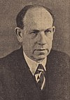 |
1953-1957 |
Založil Československo, zasazoval se o lidská práva a demokracii |
| Antonín Novotný |
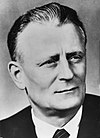 |
1957-1968 |
Byl prezidentem v období normalizace, podporoval režim a udržování sovětského vlivu v zemi |
| Ludvík Svoboda |
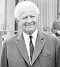 |
1968-1975 |
Byl prezidentem v období Pražského jara, později podporoval normalizaci |
| Gustáv Husák |
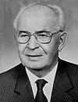 |
1975-1989 |
Prosazoval normalizaci, československou suverenitu a nezávislost |
| Václav Havel |
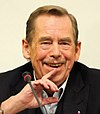 |
1989-2003 |
Bojoval za lidská práva, prosazoval svobodu a demokracii, byl aktivním disidentem |
| Václav Klaus |
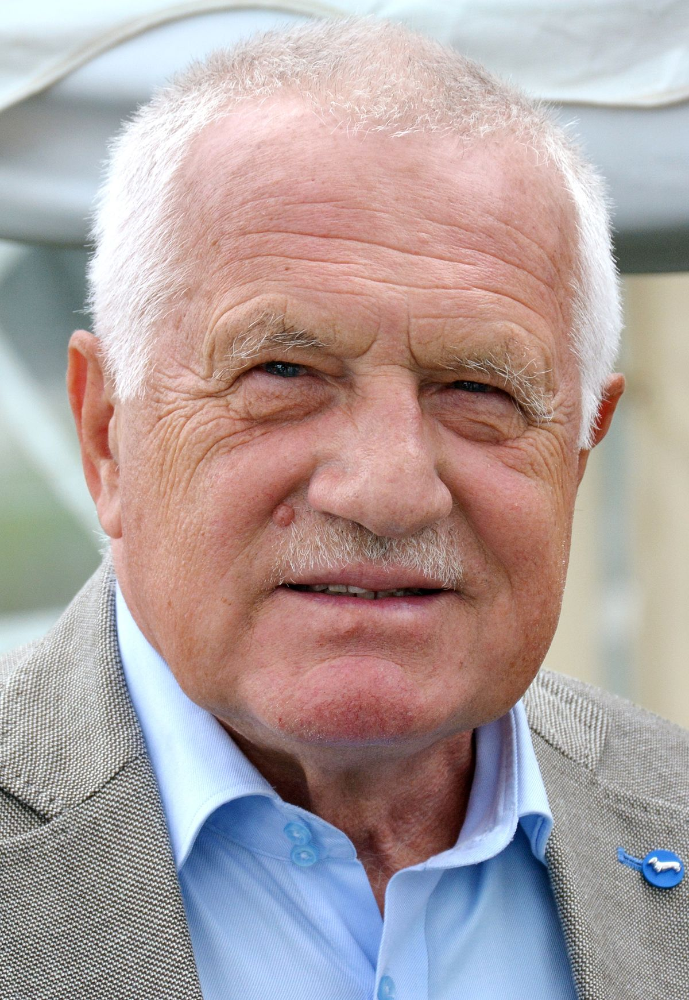 |
2003-2013 |
Prosazoval ekonomické reformy, euroskepticismus, kritizoval klimatické změny |
| Miloš Zeman |
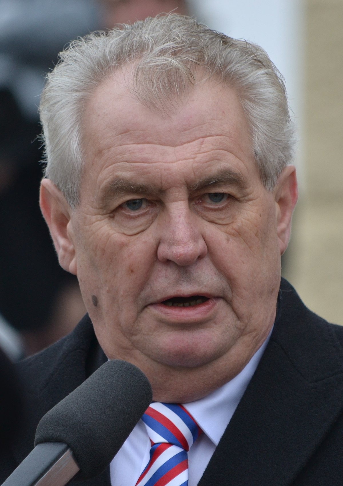 |
2013-2023 |
Prosazoval ekonomické reformy, euroskepticismus, kritizoval klimatické změny |
| Petr Pavel |
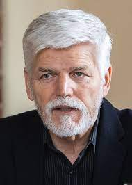 |
2023-současnost |
Nic :D |